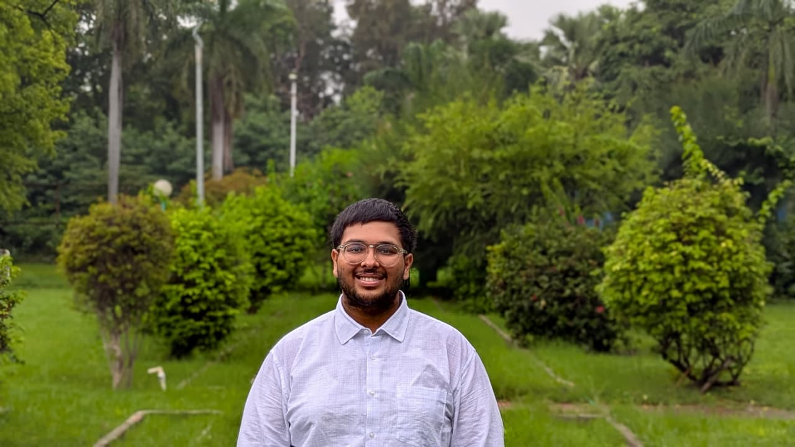

I'm a B.Tech Artificial Intelligence & Data Science student passionate about AI, data analytics, and software development — building systems that solve real infrastructure and business problems, not just prototypes.

I'm a third-year B.Tech Artificial Intelligence & Data Science student at Gati Shakti Vishwavidyalaya (2024–2028) — India's first university built around infrastructure and logistics, which is exactly where my work lives: freight corridors, airport ground operations, and the systems that keep them moving.
At DFCCIL (Operations & Business Development Intern, Corporate Office, Noida), I built a full production AI system — GCT-DSS — to evaluate Goods Cargo Terminals across 115 stations on India's Dedicated Freight Corridors. It scored 92/100 in my final evaluation and is live on Streamlit Cloud.
Before that, at Indian Railways' DRM Office, Delhi Division — inside the Signaling & Telecommunications (S&T) department — I saw what a national-scale control system actually looks like, signal by signal.
Now I'm reusing that same pipeline architecture to build AeroTwin, an AI digital twin for airport ground operations, alongside a credit risk platform for NBFCs. I think in pipelines, build in Python, and believe every model owes you a decision — not a metric.
A running log of where I've studied, interned, and what I built along the way.
From a production system evaluating 115 freight stations to a credit risk engine still in flight.
AI-powered feasibility + site recommendation engine for Goods Cargo Terminals across India's Dedicated Freight Corridors. Built for DFCCIL — in production, evaluated 92/100.
AI digital twin for airport ground operations — turnaround simulation, gate and ground-crew allocation. Course deliverable worth 25% of my grade, built by reusing the GCT-DSS pipeline architecture end to end.
Credit risk decisioning platform for NBFCs and lending platforms — an XGBoost scoring engine, SHAP-based explainability, and a rule-based advisory layer that turns a score into a REJECT-to-APPROVE recommendation.
Time-series forecasting on real retail data. Demand prediction pipeline with trend decomposition and seasonal analysis.
Currently looking for opportunities in AI systems, infrastructure analytics, and applied ML — freight, aviation, fintech, wherever the data leads. If you're building something real, I'd love to talk.